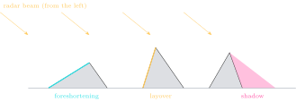

Definition
Let be the terrain slope towards the radar and  the incidence angle on flat ground.
the incidence angle on flat ground.
- Foreshortening (): the slope facing the radar is mapped to fewer range cells than its ground length; energy from the whole slope is concentrated: bright, compressed.
- Layover (): the top of the slope is closer to the radar than its foot, so it appears first: the slope is reversed and overlaps with other terrain.
- Shadow (back slope steeper than ): no illumination, no signal: black areas, behind mountains and tall buildings.
Small incidence angles (steep look) enhance foreshortening and layover; large ones enhance shadow.
Picture

Worked example
Incidence angle on flat ground (ERS). A slope of 30° facing the radar exceeds : layover — its top is imaged before its foot. A slope of 15° facing the radar: foreshortening, local incidence , very bright. A back slope steeper than is in shadow; with Sentinel-1 at layover needs slopes above 40° but shadow starts at 50°.
Intuition
Mountains lean towards a radar, the opposite of an optical image where tall objects lean away from nadir.
Pitfall
Layover and shadow areas carry no recoverable information: geometric correction with a DEM can place pixels correctly but cannot fill shadows or unfold layover.